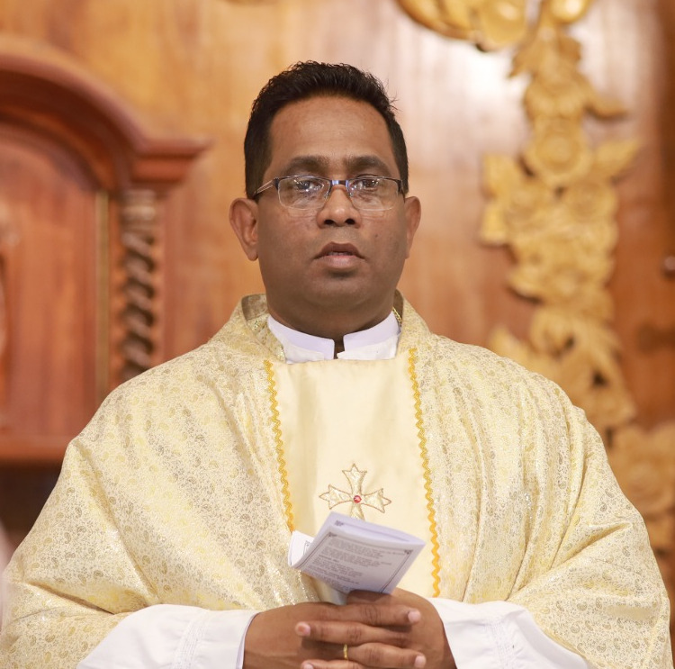
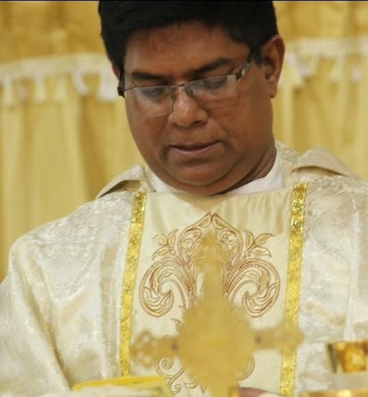
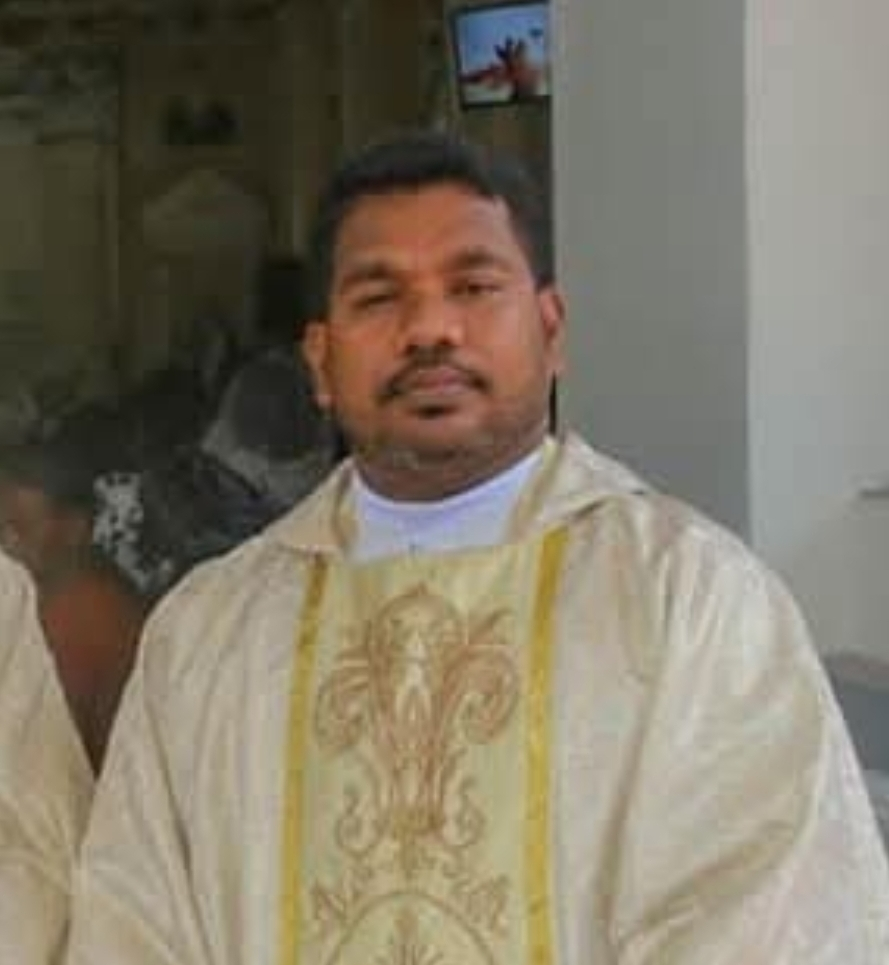

The faithful shepherds who have led and nurtured our parish through the years
Guiding our community with faith and love

Serving Since 2025
The faithful shepherds who have served our parish since 1926

The priest who was appointed to the parish following the departure of Rev. Fr. Ravindra Peiris abroad in the year 2024

A beloved shepherd who fostered strong community bonds and initiated several parish outreach programs during his tenure.
Melt his heart for the parishioners of St. Lazarus' Church.
A beloved shepherd who fostered the parish with love and care.
A loving shepherd who strengthened the community bonds and fostered strong relationships with the parishioners.
More historical records are being collected and will be added as they are verified.
Do you have historical photos, documents, or memories of our past priests? We'd love to hear from you! Your contributions help us preserve our parish's rich history for future generations.
Contact Us on WhatsApp